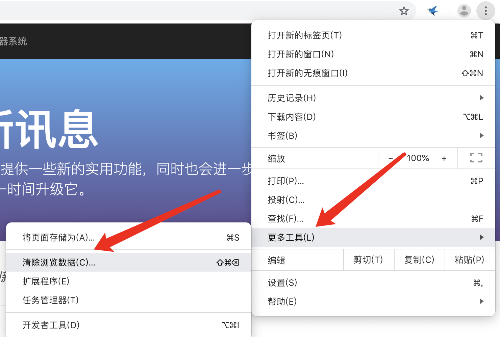

主流浏览器会缓存页面文件以提高浏览速度——这意味着当您更新kiftd后，浏览器可能并不会及时加载最新版本的页面文件从而导致新功能无法使用。此时，您可以通过手动清理缓存文件的方式来加载最新的页面文件。以Chrome浏览器为例：
1，点击浏览器右上角的菜单按钮：
2，在菜单中找到“清除浏览数据(C)...”选项：

3，在弹出的对话框中，将时间范围设置为“时间不限”，之后勾选“缓存的图片和文件”项目，并点击“清除数据”按钮：
4，清理完毕后，请刷新kiftd主页并开始体验新功能。
提示：同理，当您升级kiftd之后，也应告知其他用户手动清理浏览器缓存文件，从而确保新功能可用。不同厂商提供的浏览器可能有所区别，具体清理方式请以官方提供的使用说明为准。